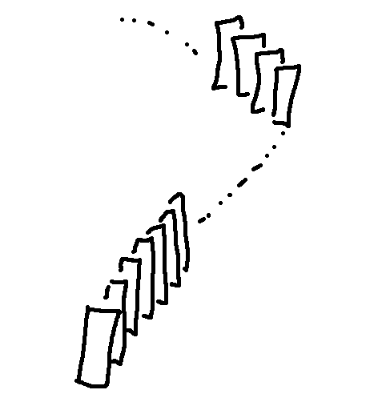

When learning induction, you have two tasks. You need to learn to use the method on practical examples. And you need to understand why the method works. You can tackle these separately, e.g. learn to use the method while you're still figuring out whether you believe it's legitimate.
Here are three different ways to think about why the method is valid.
First, you can imagine the claim at each value of n as being a domino. There's a first domino, followed by a line of following dominoes. It snakes around the engineering quad, then over to Chicago, then heads up into space and out past Jupiter and so on forever. If you push down the first domino, the next one will fall, and then the next one, and so forth. After a delay, the ones in Chicago start falling. After a bigger delay, the ones near Jupiter. They don't all fall at once. But if you fix your attention on any one domino, eventually it falls.

Another perspective comes from mathematical foundations. The basic set of axioms that define the integers are designed so that induction works on the integers. The set and the technique are built together. So of course induction works. But only on the integers. It's possible to build a set that's very much like the integers but has extra numbers out at infinity, so induction can't reach everything.
More specifically, there's two common ways to set up the basic axioms. One has an axiom that basically says "induction works on the integers." The other method has an axiom called "well-ordering" which is equivalent to induction working. And the required proof is very short.
And finally there is the recursion fairy!
She comes in March bringing gifts for good childrent ... oops, wrong character. The recursion fairy is magical, so she can write long proofs extremely quickly.
An induction proof is basically a proof skeleton. If I give you any integer (e.g. 357), you can assemble a direct proof like this:
P(0)
if P(0), then P(1)
if P(1), then P(2)
...
if P(356), then P(357)
The only problem is that these direct proofs could get very very long and perhaps you need this verification for many specific integers. Whenever you need the direct proof for (say) 2859, you summon the recursion fairy. She writes it out on a very long piece of paper using her magical ultra-fine pen and handles you the direct proof.
This is actually what a compiler will do if you run a recursive function. It looks magical to you. But secretly the assembly code is building a series of stack frames, one for each recursive call. And it builds these stack frames exactly up to the depth of recursion you happen to need for your current problem.